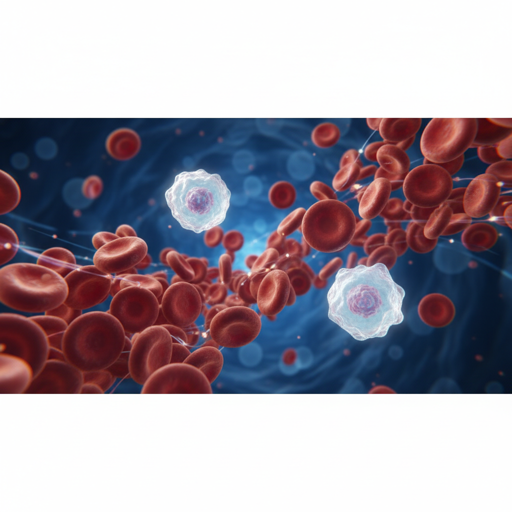
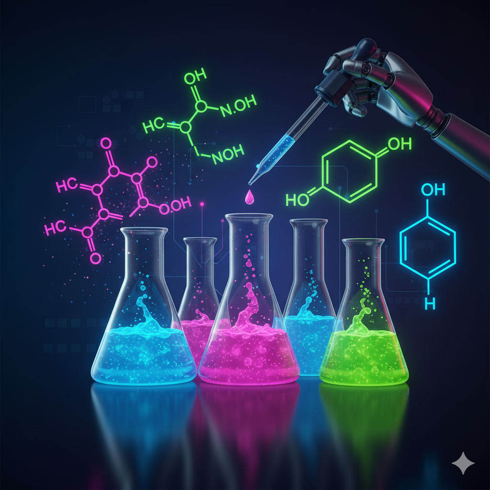
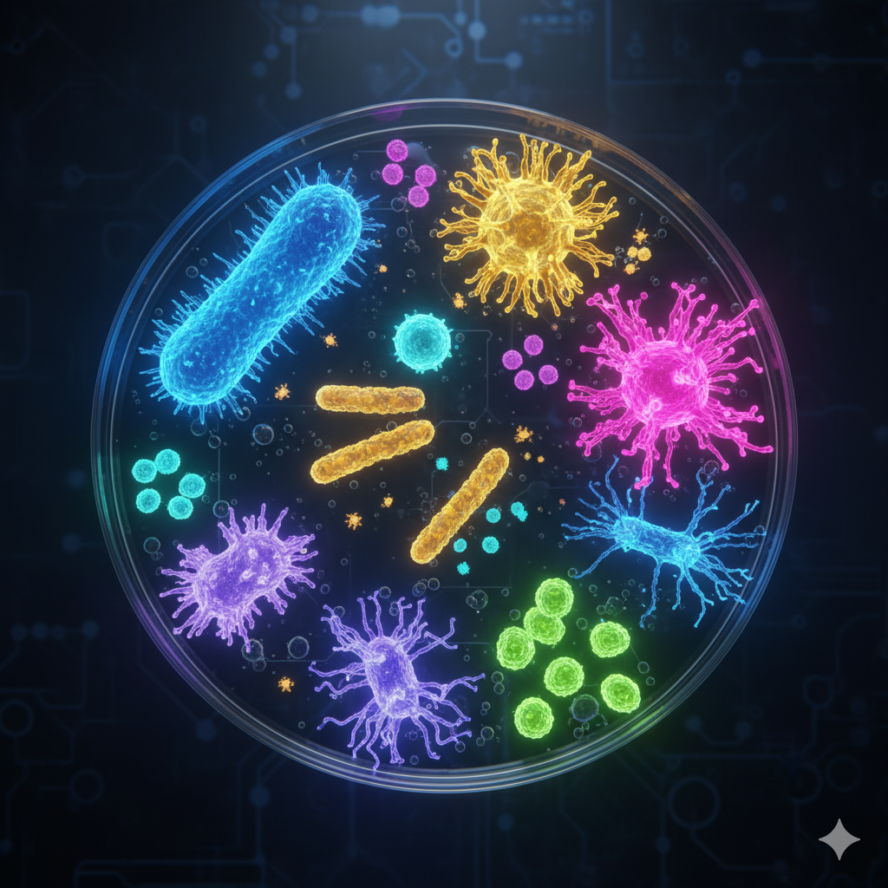
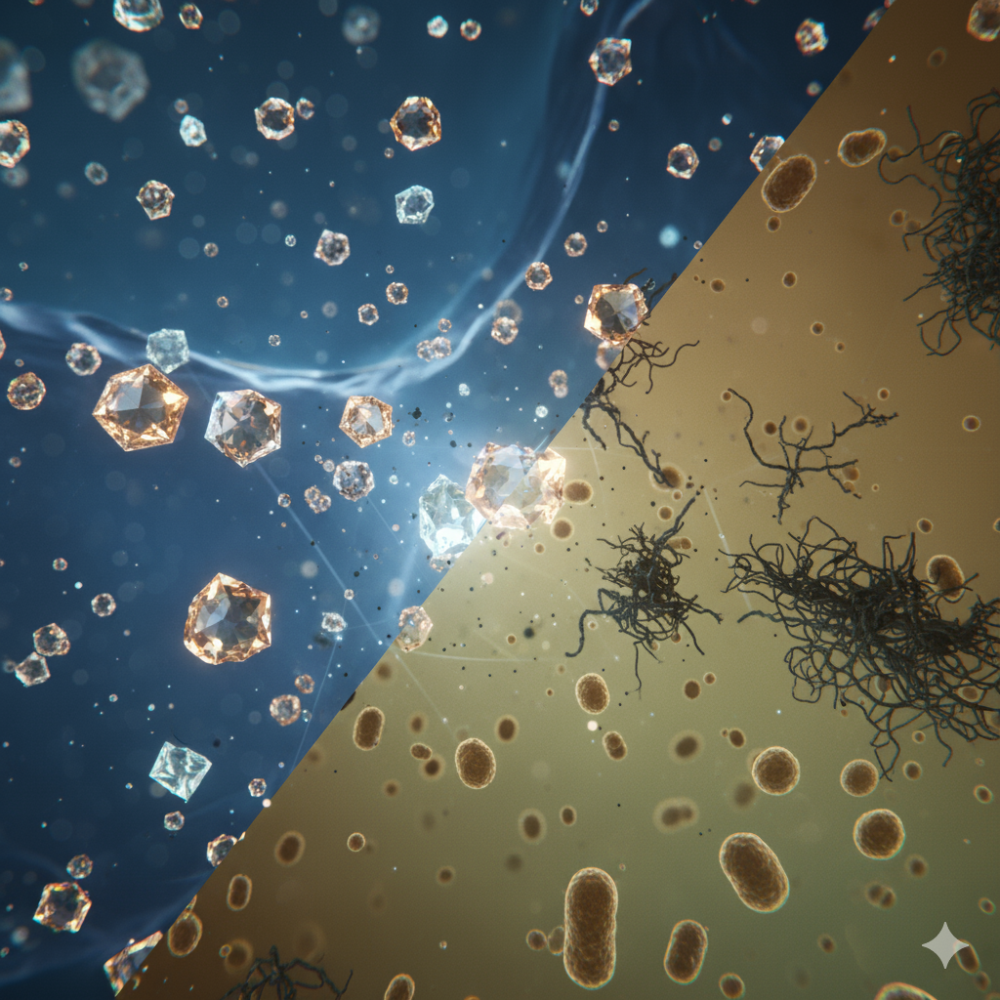

Accesibilidad:
Cápsulas de Estudio por Área
Selecciona un área clínica para ver la lista de capítulos disponibles.


Módulo de Hematología
Fundamentos de la formación de la sangre, patologías de la serie roja, serie blanca y trastornos de la coagulación.
Módulo de Química Clínica
Análisis de los componentes químicos de los fluidos corporales para el diagnóstico de enfermedades.

Módulo de Microbiología
Identificación y estudio de microorganismos causantes de enfermedades.

Uroanálisis y Coprología
Examen físico, químico y microscópico de orina y heces.